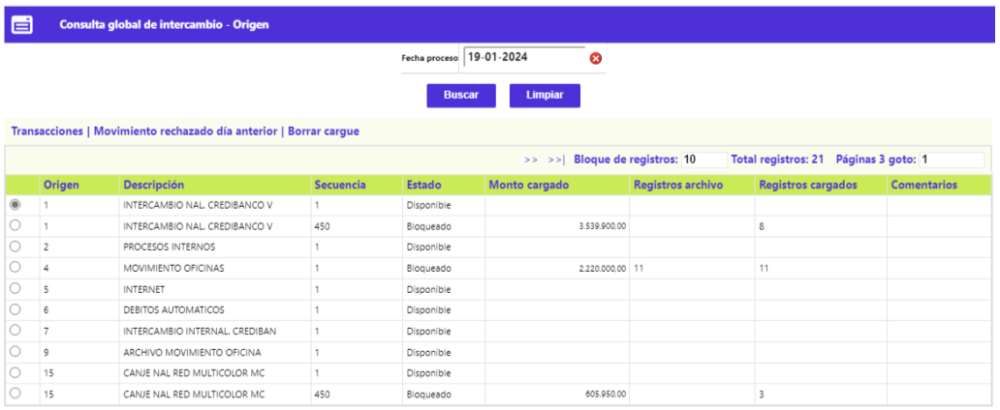
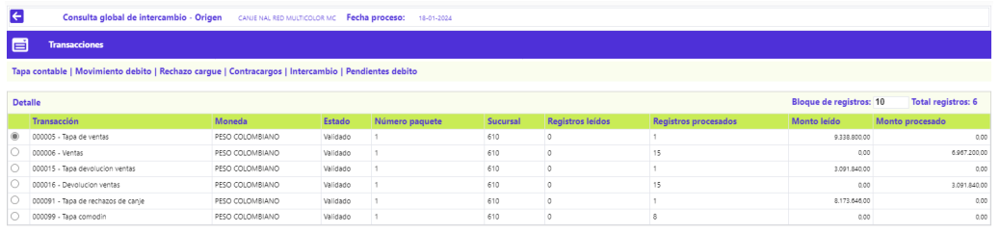
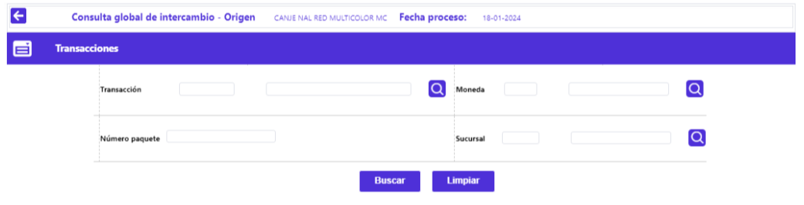

Consulta global de intercambio
Mediante esta opción es posible conocer a manera de síntesis y para cada fecha de proceso, el estado y destino del movimiento por cada origen del mismo que se haya procesado. Al invocarse la opción se despliega un formulario que en la parte superior dispone de un filtro, en el que por defecto se muestra la fecha del sistema, sin embargo, mediante la funcionalidad de un calendario, permite consultar movimiento de días anteriores. En el bloque inferior muestra los diferentes orígenes de movimiento que pueden procesarse en el módulo del Emisor, para los que ya se les haya ingresado o cargado movimiento como también, para los que aún no.
El formulario dispone de los enlaces: Transacciones | Movimiento rechazado día anterior | Borrar cargue.

|
Origen |
Contiene tanto el código como el nombre de los distintos orígenes o fuentes de movimiento definidos en la opción de Orígenes de transacciones, a través de los que ingresó movimiento para el día señalado en el campo fecha proceso. |
|
Descripción |
Campo en el que aparece el nombre de cada uno de los orígenes de movimiento asociados al dato del campo anterior. |
|
Secuencia |
Campo de salida que ilustra el número asignado por el sistema que permite identificar cada uno de los cargue de archivos o integración de los movimientos ingresados por un mismo origen para una misma fecha de proceso. |
|
Estado |
Campo de salida, el cual, mediante sus posibles valores: Disponible, Bloqueado o Validado, ilustran si el movimiento ingresado o cargado aún no ha sido validado (Bloqueado) o si le fueron aplicados los procesos de validación exitosamente (Validado). |
|
Monto cargado |
Campo que ilustra por origen el valor o cuantía total de las transacciones monetarias contenidas dentro del archivo. |
|
Registros archivo |
Campo de salida que muestra el número total de registros contenidos en cada archivo. Aplica para los orígenes en los que se ingresa movimiento mediante cargue o integración de archivos. |
|
Registros cargados |
Campo de salida que ilustra el número de registros efectivamente cargados del archivo. Aplica para los orígenes en los que se ingresa movimiento mediante cargue o integración de archivos. |
|
Comentarios |
Campo que ilustra las observaciones efectuadas por el operador a través de la opción de Procesamiento por origen mediante la que se argumentan los motivos por los cuales no fue cargado un archivo. |
Transacciones: A través de este enlace el sistema muestra un nuevo formulario que dispone de los siguientes enlaces: Movimiento débito, Tapa contable, Contracargos, Pendientes débito, Rechazo cargue, Intercambio.
A través de estas opciones se presenta de manera detallada la desagregación del conjunto de transacciones, las que por efecto de las validaciones toman diferente fin; Exceptuando la Tapa contable y el Movimiento diario, estas opciones sólo se muestran cuando existen transacciones dentro del movimiento, y permiten desplegar formularios adicionales que contienen información detallada de cada una de ellas.

Filtro: El formulario cuenta con un filtro inicial de búsqueda, necesario para la consulta de la información:

|
Transacción |
Campo en el cual se ingresa el nombre asociado a cada tipo o clase de transacción contenida dentro del archivo del movimiento. El formulario despliega la misma clase de transacción por cuantos paquetes la contengan en una misma fecha de proceso y origen de transacciones. |
|
Moneda |
Contiene el nombre de la moneda en que se denomina el movimiento consultado. |
|
Número paquete |
Se ingresa el número del paquete que identifica el movimiento por clase o tipo de transacción, lo que facilita su ubicación en caso de ser necesario. |
|
Sucursal |
Se ingresa el código que identifica la oficina por medio de la que ingresó el movimiento. |
Borrar cargue: Este enlace invoca la funcionalidad que permite eliminar los registros que han ingresado al sistema en la fecha de proceso, mediante el cargue de archivos, siempre y cuando no se hayan ejecutado aún los procesos que aplican dicho movimiento.
Movimiento débito | Contracargos | Tapa contable | Pendientes débito | Rechazo cargue | Intercambio